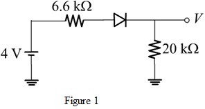
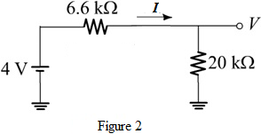
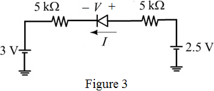
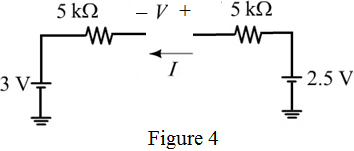

Thevenin’s voltage is the voltage across the resistance, .
Apply voltage division rule to determine the Thevenin’s voltage.

(a)
Refer to Figure P4.10 (a) in the text book.
Replace the circuit that is connected to anode (positive terminal) of the diode with Thevenin’s equivalent circuit.
Use Thevenin’s theorem to find the voltage across anode terminal of the diode.
To determine the Thevenin’s equivalent circuit across the diode terminals, first determine the Thevenin’s equivalent resistance.
Thevenin’s resistance is the parallel combination of the resistances,and .
Substitute for and for .
Thevenin’s voltage is the voltage across the resistance, .
Apply voltage division rule to determine the Thevenin’s voltage.
Draw the Thevenin’s equivalent circuit.

The voltage across the positive terminal of the diode is greater than the negative terminal of the diode and therefore, the diode is in forward bias.
Replace the diode with short (the voltage drop across the diode is 0 V when it is in forward bias).
Draw the equivalent circuit as shown in Figure 2.

Apply Kirchhoff’s voltage law in the circuit shown in Figure 2.
Thus, the value of is .
Determine the terminal voltage, V which is the voltage across resistance.
Thus, the terminal voltage, is .
Determine Thevenin’s equivalent circuit connected to negative terminal (cathode) of the diode.
Determine the Thevenin’s resistance (parallel combination of resistances connected to +6 V).
Determine the Thevenin’s voltage across the negative terminal (cathode) of the diode.
Determine Thevenin’s equivalent circuit connected to positive terminal (anode) of the diode.
Find the Thevenin’s resistance (parallel combination of resistances connected to +5 V).
Determine the Thevenin’s voltage across the positive terminal (anode) of the diode.
Draw the equivalent circuit as shown in Figure 3.

The voltage at the positive terminal (anode) of the diode is less than the voltage the negative terminal (cathode) of the diode and therefore, the diode is in reverse bias.
Replace the diode with open circuit and draw the equivalent circuit as shown in Figure 4.

The circuit in Figure 4 not forms a closed loop (To low a current in the circuit, the .
The current passing through the diode is,
Apply Kirchhoff’s voltage law in the circuit shown in Figure 4.
Thus, the value of and the voltage across the diode, V is .